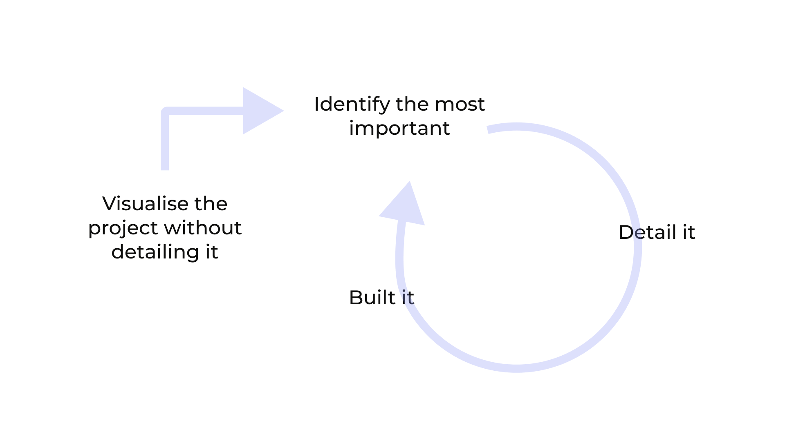

ORÁCULO
What is Oráculo?
Oráculo is a app for cultural social networking. It allows the users to share their consumption of culture with their friends and also give feedback to their cultural experiences.
Cultural Entities will also be able to set up a business account, to share and promote their cultural events. This will allow them to get to know their user better and be able to share experiences with them through the Network.
The Challenge
The goal of this project was to design a digital product that would solve a real problem within the topic “ Culture in times of Covid-19”. The entire project was approached using the Double Diamond design thinking framework. It involved the four steps: discover, define, develop and deliver.
My Role
Oráculo is the result of the final project we did for the Master in Digital Experiences Design in BAU Design College of Barcelona. In a team of three people, we worked on this project together in all steps.
RESEARCH & DEFINITION
The goal of the research was to find out how people define culture and how they consume Cultural Activities. We wanted to know if Covid-19 had an impact on the importance of consumption of cultural events, if there was a switch to online channels to do so and if these changes would remain after the pandemic.
For the research included:
- Interviews: Quantitative and Qualitative Research.
- Analysis of the impact of Covid on the media.
- Definition of Archetypes
- Affinity Map & Prioritization
- User Persona & Customer Journey Maps


After analyzing the information obtained through the research, we were able to draw four main insights and opportunities that helped us in the ideation phase.
Here we realised that the opportunities, for both user personas, were focused on the discovery and recommendation phase of cultural activities. Our final target group would be people between 18 and 45 years old who like culture and use apps on a regular basis.
Our persona needs an appraisal from a reliable external source to generate confidence in the consumption of a cultural product.
How could we gain their trust by leveraging the value of recommendations from people who really know them?
The cultural content or activities they consume are linked to their mood and emotions, so they decide what content to consume based on how they feel.
How could we capture their state of mind to meet their emotional needs?
When they consume long online content, they lose interest and look for other stimuli.
How could we keep their interest so they don't lose focus while consuming online culture?
They would like to use online platforms to discover news and cultural content that they trust.
How could we help them keep up with content and trends that fit their preferences?
IDEATION
From all the ideas we came up with, we used an Opportunity Matrix to define the ones that had more value for the user and had less coverage in the market. The final result was the creation of a Cultural Social Network. In it you can find recommendations according to your mood, share cultural content with your close environment and thus generate an environment of trust in which to generate opinions and criticisms of value around the culture you consume.
DESIGN CONCEPT: We wanted our concept to be human-centric, friendly, easy and modern, because these values also define our target.
PROTOTYPING AND TESTING
We developed our idea in different sprints. In them we iterated, to identify what was most important and what needed to be improved, to build from there.
The final product is a network in which you can create a personal or professional profile to share cultural events and experiences. You can discover new events and save them in your calendar or see the culture that your friends have consumed. The differential value of Oráculo is that with all this information shared by users, the algorithm recommends culture according to your tastes, moods, availability and objectives.